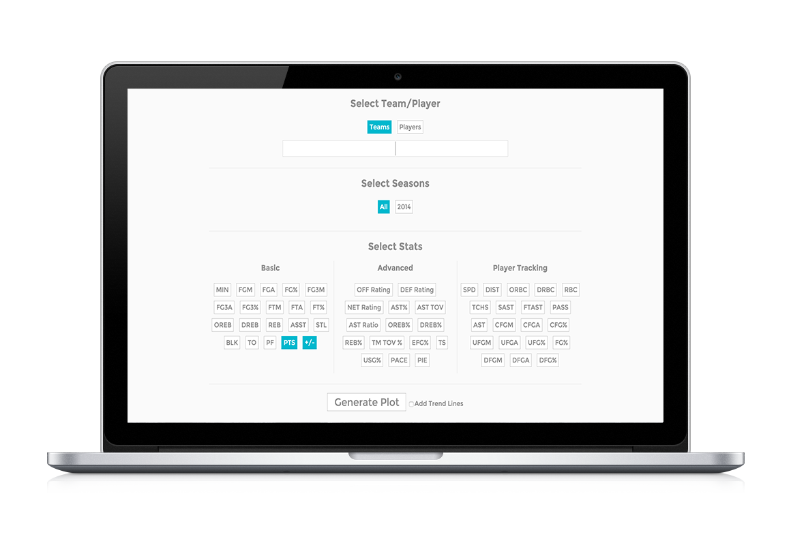

Hi! My name is Jared, I am a software engineer with a passion for users and design. This is my online resume/portfolio. I continually change stuff here and use it to experiment with new designs and techniques, but I hope you still find it easy enough to navigate!
Education
University
UC Berkeley
Graduation Date
May 2015
Major
Cognitive Science,
Concentration on Computer Science
Concentration on Computer Science
Minor
Computer Science
Professional Experience
Sales Intern
Web Engineer Intern
Technologies I Know:
(Best to Worst)
HTML5, CSS3, Javascript
Python, Java
Android, XML, JSON
Photoshop, Illustrator, InDesign
SQL, Ruby on Rails
PHP, C
What I'm Interested to Learn More About:
Non-Blocking, Event-Driven I/O Architectures (Node.js)
Mobile Development (iOS/Windows)
NoSQL, MongoDB
UX Design
Mobile Design
Big Data Systems (Hadoop, Spark, Cassandra)
Projects
This is a website I built for a UC Berkeley staff memeber with 4 other students for our Software Engineering class.
An android app I worked on that helps people form relationships and teams by having them play a fun, social game called Assassins.

A fun concept site I made that would allow people to store their photos and make scrapbooks online.

A tool to plot and analyze NBA player's and team's statistics over the course of a seasons or many seasons.

You can find more of my work on github. Unfortunately, I can't put all my class projects on there, but you can contact me and I'm happy to talk about any of them.
Let's Chat!

LinkedIn
Github
Email
Resume
^
^
Back To Top